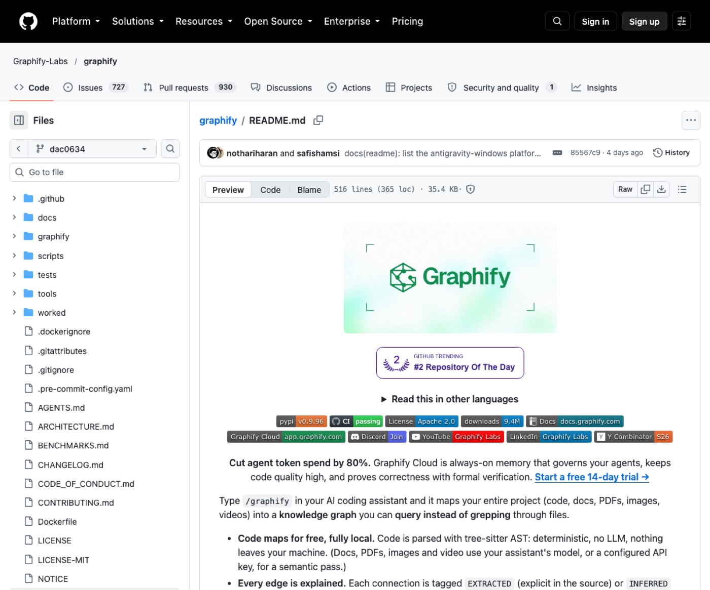
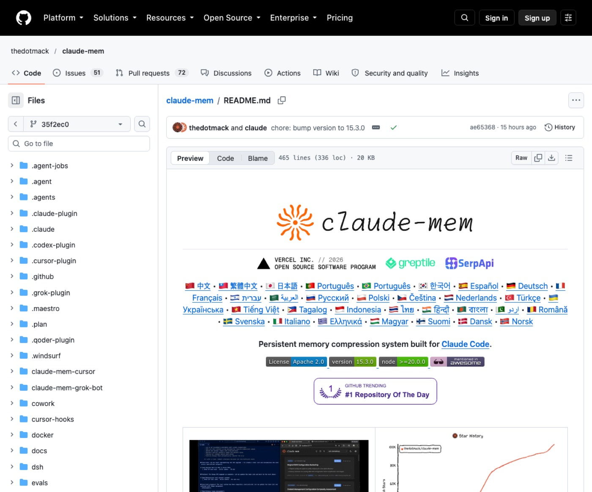
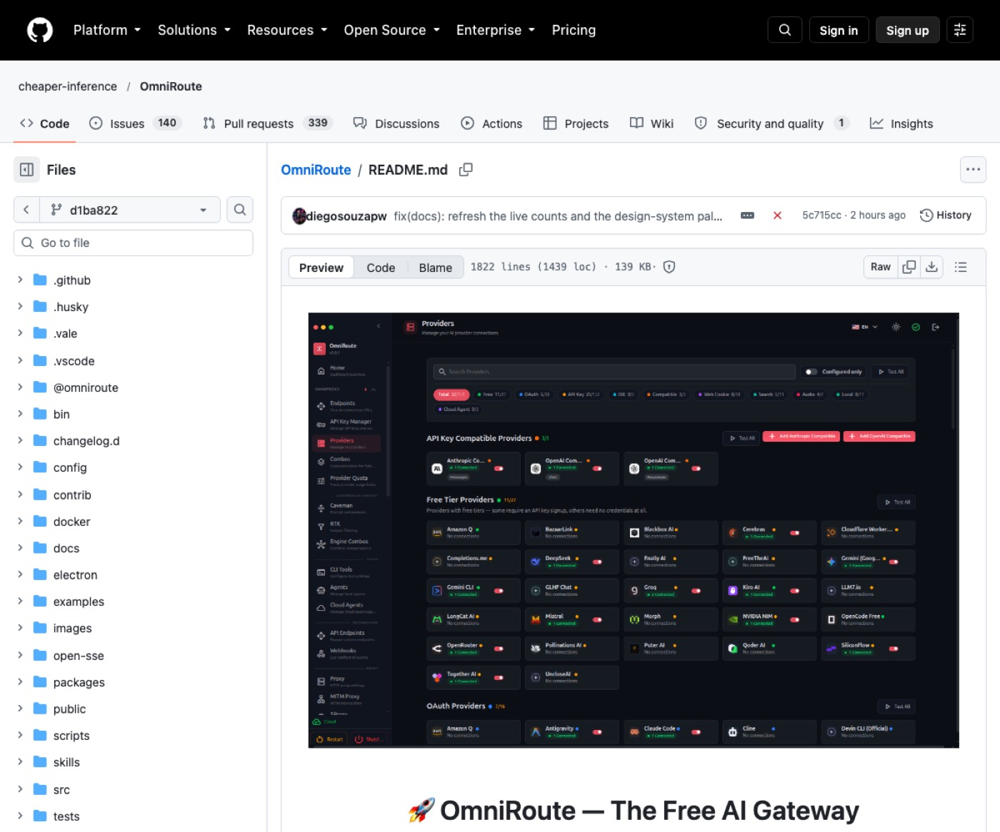
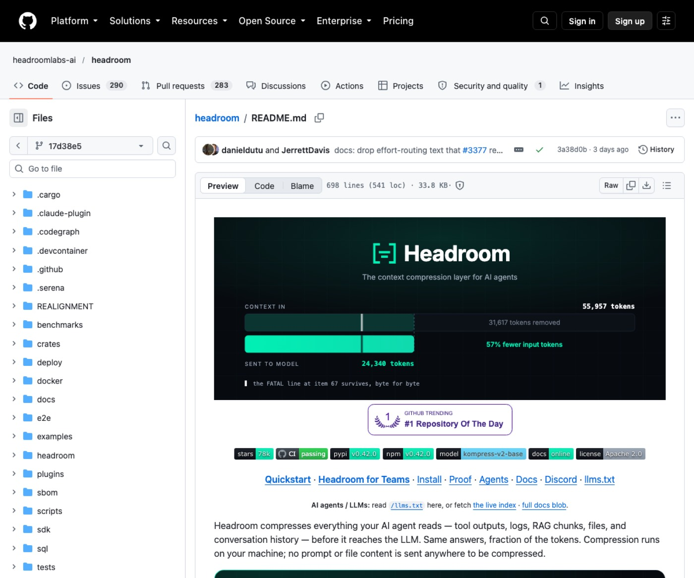
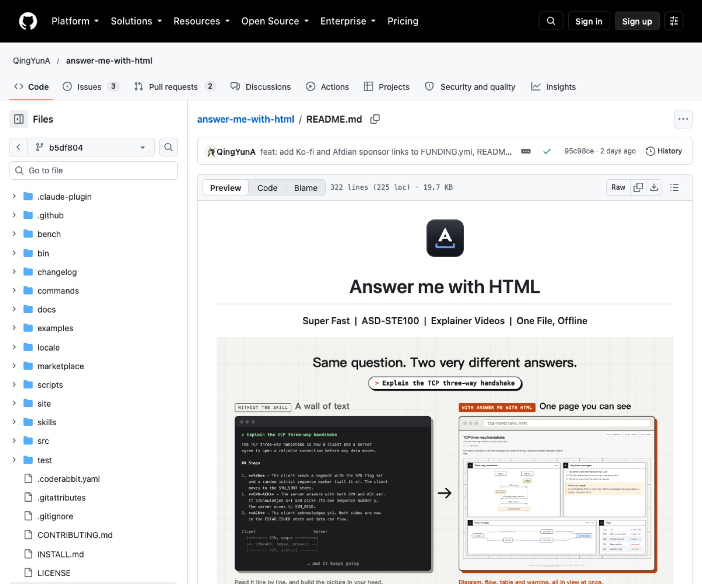

1. 시작 전 준비
- 작업 중인 프로젝트 폴더를 터미널에서 열어 두세요.
- 사용 중인 AI 코딩 어시스턴트가 정상 동작하는지 확인하세요.
- 각 도구의 필수 런타임 설치 여부를 공식 문서에서 확인하세요.
012. Graphify (그래피파이)
코드와 문서 파일이 많아 매번 전체를 다시 읽히는 직장인에게 맞아요.
프로젝트 코드를 지식 그래프로 변환해 구조를 탐색하게 해요. 전체 파일을 매번 다시 읽지 않아 반복 독해 토큰을 아껴요.

공식 문서 — Graphify-Labs/graphify README 첫 화면
설치 (공식 문서 원문 그대로)
uv tool install graphifyy
graphify install
쓰는 순서
- 터미널에서 graphify install 명령으로 어시스턴트 스킬을 등록하세요.
- AI 어시스턴트 대화창에 /graphify . 명령을 입력해 그래프를 만드세요.
- 생성된 graph.html 파일을 브라우저에서 열거나 터미널에서 쿼리하세요.
바로 쓰는 요청문
우리 프로젝트의 [결제모듈] 핵심 연결 구조를 지식 그래프에서 찾아 설명해 주세요.
[로그인함수]와 [DB연결부] 사이의 연결 경로를 그래프에서 추적해 주세요.
최근 추가된 문서와 소스 코드 사이에 누락된 참조 관계가 있는지 확인해 주세요.
공식 패키지 이름은 graphifyy이므로 설치 시 철자를 확인하세요.
023. claude-mem (클로드멤)
대화창을 새로 열 때마다 지난 작업 맥락을 다시 설명하는 사업자에게 맞아요.
세션 사이의 맥락을 자동으로 압축 저장해 다음 대화로 넘겨줘요. 지난 작업을 다시 장황하게 설명하는 토큰 낭비를 바로 막아줘요.

공식 문서 — thedotmack/claude-mem README 첫 화면
설치 (공식 문서 원문 그대로)
쓰는 순서
- 터미널에서 npx claude-mem install 명령을 실행하세요.
- 브라우저 안내에 따라 로그인하고 메모리 프로바이더를 선택하세요.
- 클로드 코드를 재시작하면 이전 작업 맥락이 새 세션에 반영돼요.
바로 쓰는 요청문
지난 세션에서 논의했던 [회원가입오류] 해결 기록과 결정을 요약해 주세요.
최근 세션 메모리에서 [배포설정] 관련해서 주의하기로 한 규칙을 찾아 주세요.
이전 작업에서 보류해 두었던 [API연동] 작업 목록과 다음 단계를 정리해 주세요.
npm 글로벌 설치 대신 공식 안내대로 npx 설치 명령을 사용하세요.
034. omni-route (옴니루트)
유료 모델 비용이 부담스러워 무료 모델을 섞어 쓰고 싶은 1인 운영자에게 맞아요.
수많은 외부 제공자의 무료 티어를 단일 엔드포인트로 묶어줘요. 여러 무료 모델로 자동 우회 연결해 클로드 비용 부담을 낮춰줘요.

공식 문서 — cheaper-inference/OmniRoute README 첫 화면
설치 (공식 문서 원문 그대로)
npm install -g omniroute
claude mcp add-server omniroute --type http --url http://localhost:20128/api/mcp/stream
쓰는 순서
- OmniRoute를 실행하고 대시보드에서 제공자 계정을 연결하세요.
- 대시보드의 Endpoints 메뉴에서 발급된 API 키를 복사하세요.
- 로컬 엔드포인트 주소와 발급받은 키를 도구 설정에 입력하세요.
바로 쓰는 요청문
연결된 무료 모델을 사용해서 [신규상품소개문구] 초안 3가지를 작성해 주세요.
현재 설정된 최적 경로를 통해 [FAQ문서]의 오탈자와 어색한 문장을 다듬어 주세요.
비용 부담이 적은 모델로 [고객문의메일]에 들어갈 친절한 답변 초안을 작성해 주세요.
제공자별 약관과 이용 제한 사항을 사전에 확인하고 연결하세요.
045. headroom (헤드룸)
방대한 로그와 도구 출력물 때문에 입력 토큰이 급증하는 개발자에게 맞아요.
모델에 전달되는 프롬프트와 방대한 도구 실행 출력을 압축해요. 핵심 내용을 유지하면서 입력과 출력 양쪽의 토큰 소비를 줄여줘요.

공식 문서 — headroomlabs-ai/headroom README 첫 화면
설치 (공식 문서 원문 그대로)
uv tool install --python 3.13 "headroom-ai[all]"
headroom wrap claude
쓰는 순서
- 패키지 매니저로 headroom-ai를 설치하고 모드를 선택하세요.
- headroom wrap 명령으로 사용 중인 코딩 에이전트를 감싸서 실행하세요.
- headroom dashboard 명령을 실행해 실시간 절감량을 확인하세요.
바로 쓰는 요청문
방대한 [서버에러로그] 내용 중 핵심 원인과 치명적 오류 줄만 압축 분석해 주세요.
이번 [테스트결과출력] 데이터를 간결하게 요약해서 실패한 항목만 짚어 주세요.
길게 늘어진 [JSON응답데이터]의 핵심 구조와 이상 수치만 간결하게 설명해 주세요.
반복 패턴이 적은 짧은 일상 대화에서는 압축 효과가 크지 않아요.
056. answer-me-with-html (에이치티엠엘)
장문의 텍스트 답변을 읽느라 출력 토큰과 시간을 낭비하는 직장인에게 맞아요.
모델이 장문 코드 대신 마크다운 초안만 쓰게 하고 웹 화면으로 바꿔요. 출력 토큰을 크게 아끼고 다이어그램과 표로 한눈에 읽게 해줘요.

공식 문서 — QingYunA/answer-me-with-html README 첫 화면
설치 (공식 문서 원문 그대로)
/plugin marketplace add QingYunA/answer-me-with-html
/plugin install answer-me-with-html@answer-me-with-html
쓰는 순서
- 에이전트에게 INSTALL.md 링크를 주고 설치를 지시하세요.
- 복잡한 질문 끝에 HTML 페이지로 설명해 달라고 요청하세요.
- 생성된 단일 HTML 파일을 브라우저에서 바로 열어 확인하세요.
바로 쓰는 요청문
우리 서비스의 [주문결제흐름]을 다이어그램이 포함된 한 장의 HTML로 정리해 주세요.
[A솔루션]과 [B솔루션]의 장단점을 한눈에 보는 비교표 HTML 페이지로 만들어 주세요.
이번 분기 [업무추진일정]과 핵심 마일스톤을 타임라인 HTML 화면으로 구성해 주세요.
한두 줄짜리 단순 질문에는 HTML 페이지 생성을 건너뛰도록 하세요.
7. 이어 쓰기 루틴
하나씩 따로 쓰기보다 이렇게 이어 쓰면 편해요.
| 새 프로젝트를 열었을 때 | Graphify로 전체 구조를 그래프로 먼저 파악하세요. |
| 대화창을 새로 켰을 때 | claude-mem이 복원한 지난 맥락을 확인하고 작업을 시작하세요. |
| 반복 작업이나 초안을 작성할 때 | OmniRoute로 연결된 무료 모델 경로를 활용해 처리하세요. |
| 긴 로그나 데이터를 다룰 때 | Headroom을 통해 입력 출력을 압축해 전달하세요. |
| 복잡한 구조나 결론을 보고받을 때 | answer-me-with-html로 시각화 페이지를 요청하세요. |
8. 자주 묻는 질문
도구를 설치하면 기존 클로드 코드가 느려지지 않나요?
로컬 파싱과 압축 처리는 매우 짧은 시간에 완료돼요. 전송되는 데이터양이 줄어들어 오히려 응답 체감 속도는 빨라져요.
압축 과정에서 중요한 소스 코드나 정보가 유실되면 어떡하나요?
구조 분석과 문맥 보존 알고리즘을 사용해 핵심 정보를 남겨요. 원본이 필요한 경우 로컬 캐시에서 되살릴 수 있어요.
비개발자나 1인 사업자도 터미널에서 쉽게 쓸 수 있나요?
안내된 한 줄 설치 명령어를 복사해 터미널에 붙여넣기만 하면 돼요. 이후에는 평소처럼 대화창에서 명령어나 자연어로 지시하세요.
여러 도구를 한꺼번에 설치해서 같이 써도 충돌이 없나요?
각 도구는 프록시, 메모리, 시각화 등 담당하는 계층이 달라요. 공식 가이드에 맞춰 순서대로 연동하면 함께 사용할 수 있어요.
9. 공식 링크
이 자료가 도움이 됐다면
매주 새 도구를 영상으로 고르고, 따라 하는 법은 여기에 쌓아요.